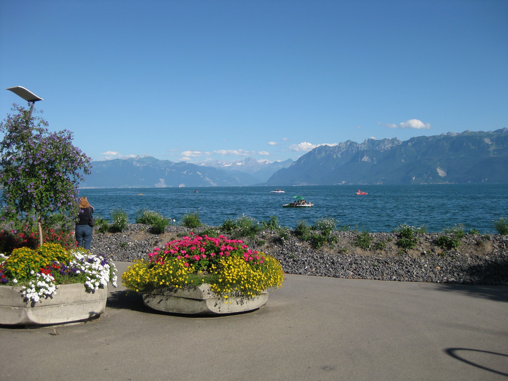

|
|
|
Evian Masters - Monday July 20th - Travel Day
 I flew out of Liverpool John Lennon Airport on the same Easyjet flight as Becky Brewerton, who won the LET tournament in Spain to get the last spot in the Evian field. I was going to say Hi at the departure gate, but she had paid for speedy boarding unlike miserly me, so I had to wait until we got to baggage reclaim in Geneva, and she got off the phone. She was going straight to the golf course to register and find out where she was going to be staying for the rest of the week!{kind=link}
Whilst Becky got her courtesy car drive to Evian, I went the scenic route. A train from the airport along the Lake Geneva shoreline to Lausanne, a quick taxi ride to the Lake Geneva lakeside, and then the ferry over Lake Geneva to Evian. The final mode of transport was shanks's pony to the Hotel de France, home for the week, which is bang in the centre of town in the Place Charles de Gaulle, with fabulous views from our room over the town and lake.
Had dinner at the same Italian restaurant as Karrie Webb, and met a couple of aussies lasses who had just travelled 46 hours non stop from South Australia. They had made it safely to Evian, but their luggage had had other plans and was somewhere en route.
Life on Tour Larry the Caddie was also staying in the Hotel de France. Had a few drinks with him in the bar L'Embuscade which was Caddie Central for the week.